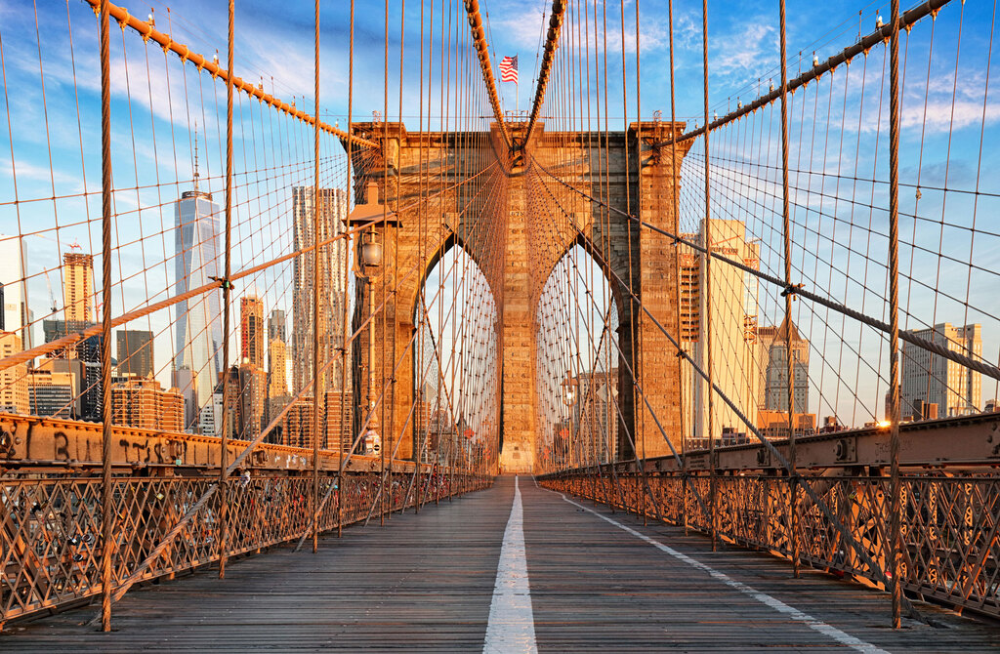
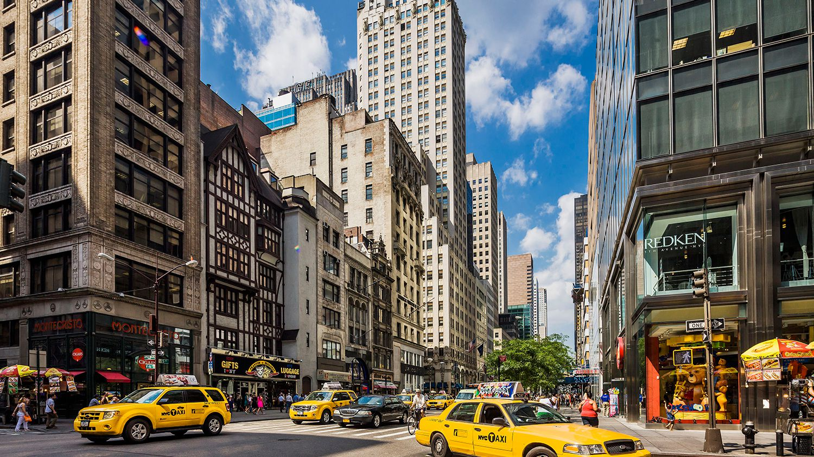

New York has to be one of the most famous cities in the world. Often referred to as the ‘Big Apple’, this vibrant city is known for its exclusive shops, flashy Broadway performances, and high-flying business tycoons, and it’s a city that has long captivated people from all over the world. But, aside from the flashing lights, it’s also home to the beloved Statue of Liberty, a symbol of freedom and hope, and Central Park, one of the tidiest and best-kept parks in the world.
Brooklyn Bridge is an impressive feat of engineering and forms a link between Brooklyn and Manhattan in New York. This iconic bridge can be viewed from the river, with many of the ferries passing close by. Or, alternatively, you can find some land-based spots with great views, such as Pebble Beach in Brooklyn. But if you really want to admire this bridge in its full glory, you should take a trip down the Brooklyn Bridge Pedestrian Walkway and Bicycle Lane. As you stroll along the wooden planks, you can appreciate how hard this bridge must have been to build back in the day, and you’ll get great views of the river, Manhattan, and even the Statue of Liberty.
Fifth Avenue, with its swathes of designer stores, is New York’s most famous shopping street and is often referred to as Millionaire’s Row. While you don’t exactly have to be a millionaire to shop there, it certainly helps, especially if you want to go on any kind of spree. Big names you’ll see include Versace, D&G, Armani, Prada, and so many more. If you’re strapped for cash, don’t despair though, there are some standard high-street stores around too, such as H&M, Zara, and Apple. Certain magic fills the air of Fifth Avenue around Christmas time when all the stores whip out their festive displays.